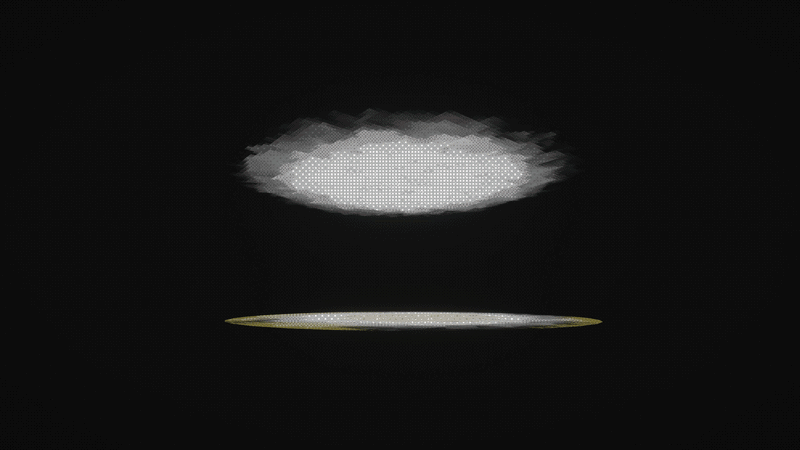

One Thousand Tea Kiosks



Overview
This is a project I made in around three weeks for a Playlab course at IT University of Copenhagen. The theme for this prototype was supposed to be procedural content generation. In the end I opted for a fake generator: every asset is set up exactly by hand, but for the user it appears as a real generator.
The thousand combinations come from choosing your style, accessories, gargoyles, and lights. The possible styles include circusial, bonechard, greenhold, river temple, swamp temple, and raft.
The entire project is more of an interactive tool that showcases my solo developer skills and my style. I wanted to create something gloomy and atmospheric while advancing my design abilities. The mechanics include walking around, camera zoom-in, and restarting the generator.
Role and Contributions
This was a solo project, so there were no specific roles. I took it upon myself to learn a lot of new things and became more familiar with Unity, scripting, soundscape, and asset creation.
I made over 70 handmade and handsculpted models in VR, created a background ambience that was the first musical track I have done, and built the project solely by myself with the exception of the dithering shader effect.
Engine and Tools
Unity, Photoshop, Gimp, Blender, Shapelab (VR), Audacity.